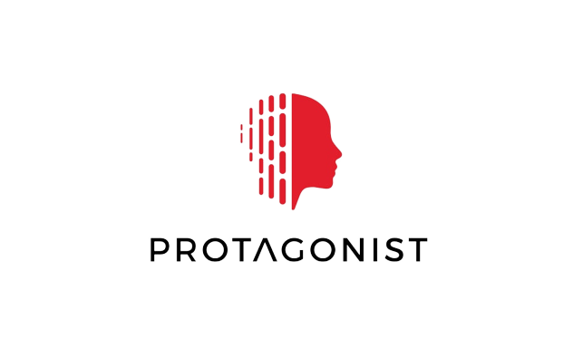

About Me
Hi, I'm Nick Hayes. I'm a Rhodes Scholar at Oxford University, where I study the overlaps between mathematics, computer science, and linguistics, with a specialty in speech and language processing technologies.
In my free time, I enjoy hiking, rock-climbing, tennis, endurance sports, and learning new languages.
Scroll to read more about my background
Education
MSt Linguistics, Philology, and Phonetics, University of Oxford (ongoing)
Selected Coursework:
Foundations of Linguistic Theory (Syntax, Phonetics, Phonology, Semantics);
Historical and Comparative Linguistics;
Computational Linguistics (NLP)
BS Applied Mathematics, University of Alabama
Selected Coursework: (* denotes graduate course)
Calculus I, II, III; Differential Equations;
Linear Algebra; Discrete Mathematics; *Numerical Linear Algebra;
*Complex Variables; Theory of Probability; *Numerical Analysis;
*Statistics I
General Physics I, II; Intro Modern Physics; Intermediate Mechanics
BA German, University of Alabama
Selected Coursework: (* denotes graduate course)
German I, II, III, IV; German History I, II;
German Literature I; Germanic Mythology; Business German
Intro Linguistics; *Linguistic Anthropology; English Grammar;
*Sociolinguistics; Anatomy & Physiology of Speech Mechanisms;
*Language Change
Experience

Selected Interests as a Bookshelf
Credits to logical.ai for this idea
Death in the Rainforest, Don Kulick
Speech and Language Processing, Jurafsky and Martin
The Kite Runner, Khaled Hosseini
Walking to Listen, Andrew Forsthoefel
Lexicon, Max Barry
Kusadikika, Shaaban Robert